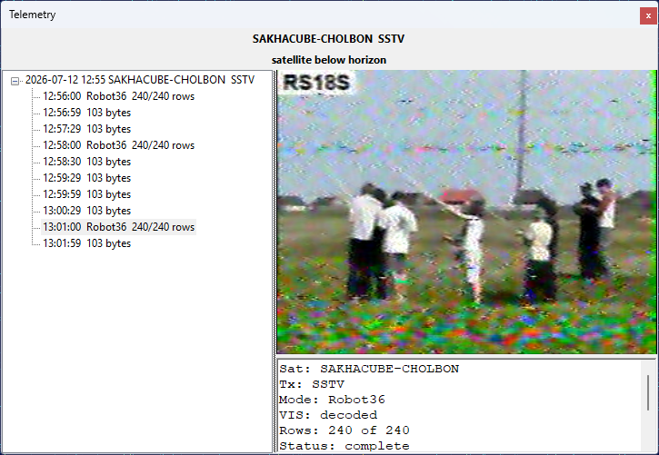

Receive SSTV Images
Some satellites transmit SSTV (Slow-Scan Television) images over an FM downlink. SkyRoof decodes these images with its built-in decoder, right inside the program — there is no need for an external SSTV program, a Virtual Audio Cable, or an output stream. The decoded image is built up line by line in the Telemetry panel as the satellite passes overhead.

Supported Modes
The decoder supports the YCrCb mode family used by satellites:
- Robot 36 and Robot 72;
- PD 50, PD 90, PD 120, PD 160, PD 180, PD 240, and PD 290.
The mode is detected automatically from the VIS header and the sync cadence of the received signal, so you do not have to select it by hand. The RGB Martin and Scottie modes, which are rarely used by satellites, are currently not supported.
Decoding an Image
Open the Telemetry panel from the View / Telemetry menu.
Select the satellite in the Satellite Selector on the toolbar. If it is not in the current group, add it using the Satellites and Groups dialog.
Select the satellite's SSTV transmitter. You can select it in the Satellite Transmitters panel, or by clicking on its label on the frequency scale. The decoder follows the transmitter selection, so make sure the SSTV transmitter is the one highlighted in the Satellite Transmitters panel.
Make sure the SDR is running and tuned to the satellite. The decoder uses the same Doppler-corrected passband as the receiver, so the satellite's signal must be visible on the waterfall at the tuned frequency.
When the satellite is above the horizon and its signal starts to appear, the decoder detects the SSTV transmission and begins building the image. Each image appears as a node in the tree, under the pass node, and updates in place as new scan lines arrive. Select an image node to watch it build up in the detail pane on the right, together with a META section that shows the satellite, transmitter, mode, whether the VIS header was decoded, the number of rows received, and the decoding status.
There is nothing to start or stop manually: the decoder rides through short signal fades and finalizes each image when it is complete or the signal is lost. A satellite whose transmitter alternates between telemetry and SSTV (such as UmKA-1) is handled automatically — the telemetry frames and the SSTV images both appear in the same panel.
Saved Images
Each finalized image is saved automatically as a PNG file, with a JSON sidecar holding its metadata, in the SstvImages subfolder of the data folder. You can also right-click an image in the detail pane and choose Save As... to save it to a location of your choice, or Copy to copy it to the clipboard.